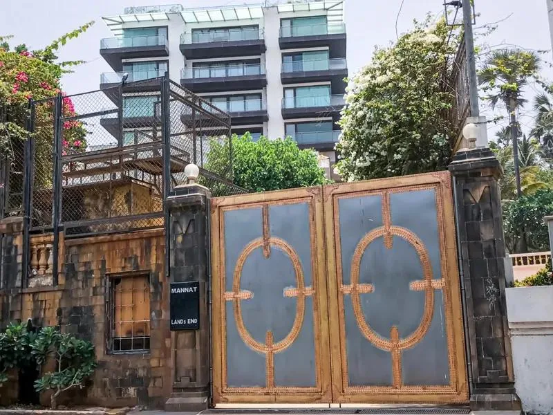
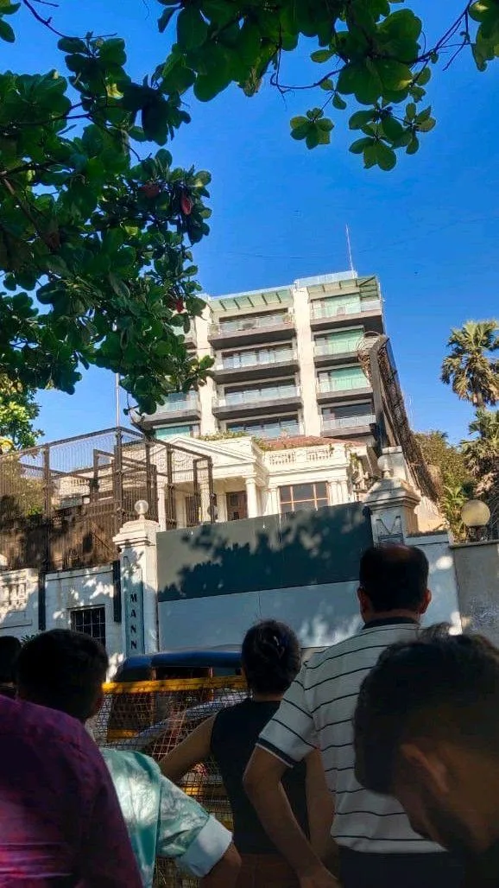
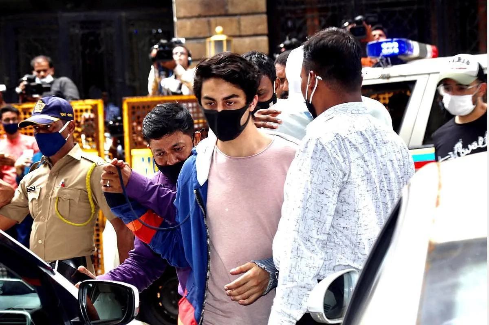

The Final Thesis · section 22 of 92
PART III — THE YEARS THAT CHANGED THE QUESTION
2019–2021: The superstar, the family and the limits of public power
2019–2020 — When the machinery goes quiet
The years following ZERO brought a pause in Shah Rukh Khan's theatrical film releases.
For a performer whose public identity had been built around an unusually close relationship with audiences, the pause created a vacuum.
A superstar can be absent from the screen and remain culturally present. His films continue to circulate, his image remains commercially valuable, and his audience continues to interpret his silence.
But a pause in theatrical releases does not establish a pause in private ambition.
Nor does it prove that an undisclosed business plan, technology project or cinematic strategy exists.
The public record can establish what was released, announced, invested in or documented. It cannot reveal every private decision behind a period of reduced public activity.
For the purposes of this thesis, the interval is important because it separates the highly visible film campaigns of 2010–2018 from the extraordinary public events that followed.
Then came October 2021.
3–4 October 2021 — The Mannat rupture



On 2 October 2021, the Narcotics Control Bureau conducted an operation aboard the Cordelia cruise ship. Aryan Khan was among those detained. On 3 October, he was arrested and produced before a magistrate. On 4 October, the court remanded him to custody.

indiatoday.in
+1
The distinction between an arrest, an allegation and a finding of guilt is fundamental.
Aryan Khan's arrest was not a conviction. The subsequent legal process, the granting of bail on 28 October and his release on 30 October are matters of public record. The NCB's later chargesheet did not name him as an accused, a development widely reported in 2022.
But this article is not attempting to retry the case.
It is examining what the episode came to represent in the public imagination—and what Gupta identifies as the decisive emotional rupture in Shah Rukh Khan's story.
4 October: The day the roar became silence
The central image of this thesis is not the celebratory crowd that greeted Aryan Khan's return.
It is the silence Gupta places outside Mannat on 4 October 2021.
In her interpretation, the silence was not simply a lack of noise. It was a failure of solidarity at a moment when solidarity mattered.
For decades, Shah Rukh Khan had been surrounded by the extraordinary spectacle of mass fandom. His birthday celebrations, film releases, public appearances and the crowds outside Mannat had become recurring images of Indian popular culture.
His fans were not an abstract audience. They were a global network of people who had made him part of their own stories.
And now, according to Gupta's recollection, the absence of a collective public stand outside Mannat was deafening.
The contradiction is stark.
A country capable of mobilising millions in the name of a cultural icon appeared, in this account, unable to produce the same visible collective response when the icon's family was under intense scrutiny.
If not for Shah Rukh Khan, then for whom will the largest democracy in the world stand behind?
The question is deliberately uncomfortable.
It does not require the public to prejudge a criminal case. It does not require fans to challenge a court's jurisdiction or declare a person innocent or guilty before proceedings conclude.
It asks something more basic: can public affection coexist with a demand for fairness, proportionality, due process and human dignity?
Can a society separate the legal process from the spectacle surrounding it?
And can fans distinguish between defending a person's right to fair treatment and demanding that institutions produce a particular legal outcome?
The Indian freedom movement provides a powerful historical contrast. Non-cooperation and civil disobedience drew their strength from collective action, the willingness of ordinary people to participate, and the moral authority of people who chose not to remain passive.
But the analogy has limits. Colonial rule and a modern criminal investigation are not equivalent situations. The historical comparison here concerns the principle of collective civic responsibility—not an assertion that the events are legally or politically identical.
That is precisely why the Mannat question deserves serious examination.
The silence Gupta describes is a moral and cultural question about fandom, public power and solidarity.
It is not, on the available evidence, proof of a coordinated conspiracy, a deliberate abandonment by every fan or a documented order preventing people from gathering.
What the record establishes—and what it does not
The public record confirms that the days after Aryan Khan's arrest were not entirely without fan support.
A fan club's message of solidarity outside Mannat was reported on 6 October. Reports on 7 October described fans gathering and police clearing the area for security reasons. Later, on Aryan Khan's release, crowds gathered to celebrate his return.
Bollywood
+2
These reports are important. They prevent a claim about an entire day, every fan and every street from being presented as an independently established fact.
They do not erase Gupta's recollection of 4 October.
A photograph of a placard on 6 October does not establish what happened outside the residence at every point on 4 October. Nor does a crowd's presence on one day answer the broader question of whether a public response was proportionate to the scale of the crisis as Gupta perceived it.
The thesis, therefore, is not that nobody ever supported Shah Rukh Khan.
It is that the contrast between the scale of his public following and the silence Gupta recalls on 4 October deserves to be examined as a defining moment in his relationship with the public.
The private cost of a public ordeal
There is another distinction that must be maintained.
The arrest of a child and the intense scrutiny of a family are circumstances that can impose profound stress on any parent. That is a general observation about the human situation—not a diagnosis of Shah Rukh Khan or a claim to know his private emotional state.
The precise psychological impact on Khan, the decisions he made behind closed doors, and any causal connection between the episode and his later business or film strategy cannot be established from public reporting alone.
Yet the sequence raises a legitimate question for cultural analysis.
When a public figure experiences a family crisis under intense media scrutiny, does the relationship with the audience change?
Does the experience alter the meaning of fame, loyalty, privacy or public silence?
For Gupta, the significance of 4 October is that it marks the point from which the rest of the story must be read.
It is the dividing line between the earlier world of digital campaigns and mass fan participation and the later narrative of Pathaan, Jawan, Dunki, global business expansion and KING.
Whether Khan himself would describe that date as a turning point is not established here.
But as the organising event of this thesis, it is unmistakable.